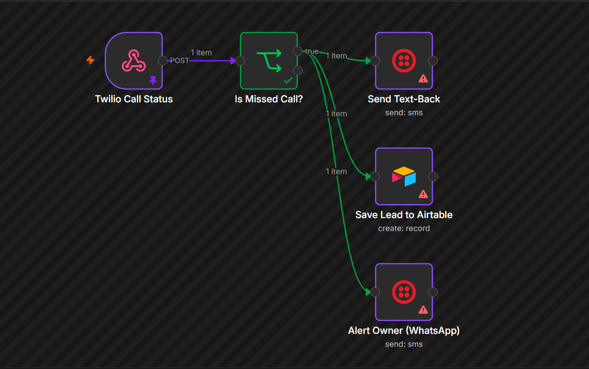

System · 03 of 10
Missed Call Recovery
A missed call gets a friendly text back within moments, so the inquiry does not end at voicemail.
Problem it solvesCallers who hang up and try the next practice
- Telephony API
- n8n
- CRM
The problem
Every practice misses calls. Most callers who do not reach a person do not leave a message, and nobody has a record that they ever called. Often it was a new patient, and you never find out.
The solution
When a call goes unanswered, the system texts the caller right away, asks what they need, collects the details and alerts your front desk. Every recovered inquiry is tracked, so you can see exactly what it brought back.
What it does
- Detects missed calls
- Texts the caller automatically
- Finds out what the patient needs
- Alerts your front desk
- Tracks every recovered inquiry
- Includes opt-out wording in the first message
What it looks like
Sample text thread2 minutes after a missed call
Practice (automated)Hi, this is Sample Dental. Sorry I missed your call. How can I help? Reply STOP to opt out.
PatientI need a cleaning sometime next week.
Practice (automated)Happy to help. Do weekday mornings or afternoons suit you better?
PatientMornings.
Practice (automated)Thanks. A team member will confirm a time with you shortly.
- ✓ Inquiry captured
- ✓ Front desk alerted
- ✓ Tracked as recovered
Workflow
- Call goes unanswered
- Text goes to the caller
- Patient replies with what they need
- Your front desk is notified
- Recovered inquiry is tracked
Behind the scenes

Technology
- Telephony API
- n8n
- CRM
Want this running in your practice?
See it working first. I will map the workflow around the way your team already works.